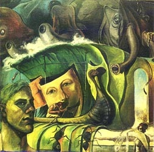

 |
vandenyje |
Vandenyje – pirmasis grupės Foje albumas grupei atsikūrus senaja sudetimi (su vienu nauju nariu) – ši sudėtis išliko iki pat jos gyvavimo pabaigos. Albumas buvo išleistas 1993 m.
Albumo įrašymo periodu Andrius Mamontovas vedė naktinę laidą radijo stotyje M-1 „Nakties balsai“.
-
Andrius Mamontovas – akustinė ir elektrinė gitaros, balsai
-
Arnoldas Lukošius – klavišiniai
-
Darius Burokas – boso gitara, klavišiniai
- Algimantas Kriščiūnas – mušamieji
-
DJ Tomas – vokalas („Nakties balsai“)
-
Raimondas Trilikauskis – garso operatorius
PĖDOS ANT DRĖGNO AKMENS
gydanti muzika milijonai žvaigždžių
svaiginančios giesmės aš daug jų turiu
nemigo naktys jos trunka ilgai
neramūs šešėliai tai mano draugai
pėdos ant drėgno akmens jos greitai nuo žemės atsiskirs
aš laukiu rudens aš noriu pamatyt kaip lapai mirs
kas šaukia mane tada kai vianatvės reikia man
aš noriu vandens nes jis kaip ir laikas teka
pokalbiai mūsų netekę vilčių
tai tik dalelytė beribių minčių
melodijų aidas giliai viduje
jas norint išgirsti reik plėšyt save
bėgatys metai nutolina mus
nuo pirmojo žingsnio kurio jau nebus
ir tas kelias per mišką ir kas jo gale
kas vakar žinojo jog šiandien aš čia
PASIIMK MANE
pasiimk mane iš šitos klaikios skylės
pasiimk mane nieks dėl to čia neliūdės
pasiimk mane padaryki tai šiąnakt
pasiimk mane aš nenoriu nusilakt
aš noriu pabėgti iš čia išgaruoti iš čia kaip vanduo
aš noriu pabėgti iš čia nes nenoriu miegot su bet kuo
ir jei aš pabėgsiu iš čia ne toks liūdnas bus ryto dangus
ir jei aš pabėgsiu iš čia mano protas išliks skaidrus
pasiimk mane kas tie žmonės kur aplink
pasiimk mane mes dar galim pasirinkt
pasiimk mane vynas mūsų nepaguos
pasiimk mane aš bijau kitos dienos
IR AŠ DAR GYVENSIU
aš apie tai skaičiau senoj dulkėtoj knygoj
aš apie tai girdėjau pokalbiuose žmonių
tekančiam vandeny visą tai užrašyta
virpančioj liepsnoje visą tai rast gali
kad aš dar gyvensiu daug tūkstančių metų
ir mano vienatvė gyvens amžinai
ir tu dar gyvensi daug tūkstančiu metų
ir tavo vienatvė gyvens amžinai
tyliai vėl lis lietus oras vėl bus toks grynas
nieko nesimatys atvirame lange
tavo akių tyla veidrodyje atspindėta
klausia tavęs ar mirus gimti reikės dar kart
KETVIRTOJI DAINA
kai aš savo tėvą užmušti norėjau vėl
aš leidau liepsnoti tam pykčiui per daug ilgai
ir griūvantys miestai kažkur mano viduje
pažadino mintį ar aš savo kelyje
kai tu mano meilę užmušt manyje bandei
ir tai tau pavyko aš bėgau šalin ilgai
prisiekęs negrįžti ir amžiams užmiršt tave
ilgai dar galvojau ar aš savo kelyje
kai vogti įprasi ir eisi žudyt nakčia
kai tu prievartausi ir nieks nebaugins tavęs
tau teks gal sekundei trumpam sustabdyt save
nes aš tavęs klausiu ar tu savo kelyje
BET
bet šis pasaulis per daug jau liūdnas
kad aš galėčiau šypsotis gražiai
tik šis pasaulis per daug jau piktas
kad aš galėčiau prajuokint tave
mano gyvenimo erdvės aplenkia
industrinio liūdesio miestus
bet kartais kai įvykių eigai pakeisti
tereikia tik meilės aš trokštu ištrūkti į laisvę
raudonos spalvos atskiedžia juodą
pasaulio tvanas ir amžinoji šviesa
ar tu sapnuoji tai kartais naktį
ar tu jauti tai giliai viduje
tu kartais klausi kodėl aš keistas
kodėl aš noriu kažko daugiau
ir mano žodžiai nereiškia nieko
jei tavo akys užmerktos man
ATSIMENU TAI
atsimenu tai ko nebus jau daugiau
atsimenu koks buvo aukštas dangus
aš mėgau svajot kaip dabar tai matau
atsimenu savo vaikystės draugus
tik prisimint negaliu ką visai pamiršau
man brangi kiekviena paauglystės diena
ir ta mergina kuri išmokė bučiuot
atsimenu ir tą kuri buvo pirma
atsimenu kaip aš pradėjau dainuot
atsimenu miestus visus kur buvau
Paryžiaus gatves ir Niu Jorko barus
ir katedrą Prahoj kur dievą radau
ir žmones visus kuriuos ten sutikau
tik prisimint negaliu ką visai pamiršau
tik prisimint negaliu kur aš vakar buvau
VANDENYJE
šitas keistas pasaulis verčia mane
amžinai ieškoti vilties
nesibaigiantis triukšmas verčia mane
amžinai ieškoti tylos
vandenyje šaltam vandeny
begalinė ramybė verčia mane
amžinai ieškoti kančios
nepripildytas jausmas verčia mane
amžinai ieškoti tavęs
NIEKO PANAŠAUS
skrendant kažkuriame keistam sapne
žemė liko galbūt per daug toli
svajonės ar tu tada matei mane
tai buvo vėl svaičiojimai apie tave
ir nieko nieko panašaus į šį pasaulį
ir nieko nieko kas primintų blogas mintis
ir nieko nieko panašaus į sutryptą meilę
ir nieko nieko panašaus į tavo akis
kai bėgau kai bėgau debesų takais
galbūt atitrūkau šiek tiek per daug
kaip rasti tai kas tęsiasi amžinai
tu leidai o gal ir privertei likt aukštai
ARBATA
ar tu atsimeni laikus
visas beprotiškas naktis
mūsų negimusius vaikus
aš vis dar matau jų akis
tai buvo keisti keisti laikai
kai mes vis dar žudėme save
ir mūsų begęstantys veidai
atsispindėdavo lange
dabar ant stalo prieš mane tiktai atšalus arbata
o rankos tyliai uždengia akis
aš noriu būt kažkur toli nes jeigu liksiu praeity
galiu ir vėl pradėt kartot klaidas
ilga kaip šimtmečiai diena
ilgai bus chaoso pilna
vienatvė tūno visuomet
kažkur arti prie kūno bet
nebūna amžinas ruduo
ir aš tikiu kažkiek dar tuo
silpna pulsuojanti šviesa
tamsaus koridoriaus gale
MĖLYNI PLAUKAI
ei mėlyni plaukai tinka tau labai
aš samonės netenku
man dar labai patinka tai kad tau nestinga
šypsenos ir gėlių
užteks liūdėt aš taip seniai jau noriu skrist
jei tau baisu į mano ranką įsikibk
ir aš žinau kad mes negrįšime atgal
ir aš žinau kad tam ir duota ši diena
o tavo keistos akys kartais jas pamatęs
aš visiškai sutrinku
o tavo tylus žodžiai kartais man atrodo
lyg balsas iš debesų
o tu puiki šiandieną ir mes geriam pieną
sėdėdami ant grindų
jei mes liksim dviese pasakysiu tiesiai
mes rasim bendrų taškų
NAKTIES BALSAI
vienas mano pažystamas tu jo tikrai niekada nematei jisai
sugalvojo keistą būdą kaip suvesti sąskaitas su gyvenimu
ir buvo silpnas ir nesugebėjo išlaukt vakare pripildė vonią
vandens išjungė šviesą kad nematytų kraujo atsisėdo ir įkišęs
rankas į vandenį aštriomis aprūdijusiomis žirklėmis persipjovė
venas ryte kažkas rado jo baltą kūną raudonam vandeny
aš nenoriu taip žaist
aš noriu kad mano gyvenime viskas būtų tikra
tiek meilė tiek mirtis tiek džiaugsmas
viena mergina kurios vardo nenoriu aš prisiminti gyveno begalo
įdomų gyvenimą ji turėjo du vaikinus vienas iš jų ruošėsi tapti
jos vyru ir naiviai pasitikėdamas ja rūpinosi jų jau beveik
artėjančiu šeimininiu gyvenimu antrasis... antrasis apie tai
nežinodamas buvo iki ausų ją įsimylėjęs o ji negalėdavo nuspręsti
kuris yra tinkamesnis geresnis mylėdavosi tai su vienu tai su kitu
ir vieną dieną pasijutusi neščia jau nebežinojo kuris yra tėvas
yra tokių kurie matydami pinigus nori juos paimti radę alkoholį
nori jį išgerti pastebėję žavią moterį trokšta nutempti ją į lovą
ir liesti savo purvinomis rankomis vieną dieną jie susirgs
nepagydoma liga ir dvės klaikioj agonijoj